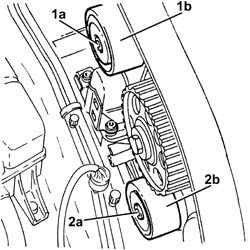

1032C32 fixed timing system tensioner (one) r + r
- Path
- Procedures > 10 ENGINE > 1032 TIMING SYSTEM > 1032C timing system tensioners > 1032C32 fixed timing system tensioner (one) r + r
- Kind
- repair procedure (removal / refitting; the operation number is the code)
- Applies to
- all engines; all production periods
- Interactive page
- https://sloeber94.github.io/elrnDB-a147/en/#/3024799
Applies to: engines: 1.6 TS; all production periods
 Removing
Removing
 Refitting
RefittingProceed with the removal 4450B10 Front WHEEL (one) - R.R. (Right side).
Proceed with the removal 7055B64 Engine compartment DUST shield in front wheel arch (one), left or right - R.R. (Right side).
Proceed with the removal 1092G10 single engine belt r r .
Proceed with the removal 1092A10 Crankshaft services PULLEY - R.R. .
Proceed with the removal 1092G20 engine component single belt fixed tensioner - one - r + r .
Proceed with the removal 1032D12 timing system protective cover(s) - r + r .
Proceed with the removal 1016A40 ignition coil cover on cylinder head- r+r .
Proceed with the removal 5510C14 ignition coil/s - r+r .
Proceed with the removal 1016A20 single cam cover - r + r and replace gasket .
Proceed with the removal 1032B10 toothed timing belt - r + r for timing adjustment or replacement .
Proceed with the removal 1032C30 fixed timing system tensioner - r + r with timing belt removed .
Applies to: engines: 1.6 TS; all production periods
Refitting
RemovingProceed with the refitting 1032C30 fixed timing system tensioner - r + r with timing belt removed .
Proceed with the refitting 1032B10 toothed timing belt - r + r for timing adjustment or replacement .
Proceed with the refitting 1016A20 single cam cover - r + r and replace gasket .
Proceed with the refitting 5510C14 ignition coil/s - r+r .
Proceed with the refitting 1016A40 ignition coil cover on cylinder head- r+r .
Proceed with the refitting 1032D12 timing system protective cover(s) - r + r .
Proceed with the refitting 1092G20 engine component single belt fixed tensioner - one - r + r .
Proceed with the refitting 1092A10 Crankshaft services PULLEY - R.R. .
Proceed with the refitting 1092G10 single engine belt r r .
Proceed with the refitting 7055B64 Engine compartment DUST shield in front wheel arch (one), left or right - R.R. (Right side).
Proceed with the refitting 4450B10 Front WHEEL (one) - R.R. (Right side).
Applies to: engines: 2.0 TS; all production periods
Removing
RefittingProceed with the removal 4450B10 Front WHEEL (one) - R.R. (Right side).
Proceed with the removal 7055B54 under-engine guard - r r .
Proceed with the removal 7055B64 Engine compartment DUST shield in front wheel arch (one), left or right - R.R. (Right side).
Proceed with the removal 1092G10 single engine belt r r .
Proceed with the removal 1092A10 Crankshaft services PULLEY - R.R. .
Proceed with the removal 1092G20 engine component single belt fixed tensioner - one - r + r .
Proceed with the removal 1092G14 engine component single belt mobile tensioner - r + r .
Proceed with the removal 1032D12 timing system protective cover(s) - r + r .
Proceed with the removal 1092E10 counter-rotating shaft drive toothed belt - r + r .
Proceed with the removal 1016A40 ignition coil cover on cylinder head- r+r .
Proceed with the removal 5510C14 ignition coil/s - r+r .
Proceed with the removal 1016A20 single cam cover - r + r and replace gasket .
Proceed with the removal 1032B10 toothed timing belt - r + r for timing adjustment or replacement .
Proceed with the removal 1032C30 fixed timing system tensioner - r + r with timing belt removed .
Applies to: engines: 2.0 TS; all production periods
Refitting
RemovingProceed with the refitting 1032C30 fixed timing system tensioner - r + r with timing belt removed .
Proceed with the refitting 1032B10 toothed timing belt - r + r for timing adjustment or replacement .
Proceed with the refitting 1016A20 single cam cover - r + r and replace gasket .
Proceed with the refitting 5510C14 ignition coil/s - r+r .
Proceed with the refitting 1016A40 ignition coil cover on cylinder head- r+r .
Proceed with the refitting 1092E10 counter-rotating shaft drive toothed belt - r + r .
Proceed with the refitting 1032D12 timing system protective cover(s) - r + r .
Proceed with the refitting 1092G14 engine component single belt mobile tensioner - r + r .
Proceed with the refitting 1092G20 engine component single belt fixed tensioner - one - r + r .
Proceed with the refitting 1092A10 Crankshaft services PULLEY - R.R. .
Proceed with the refitting 1092G10 single engine belt r r .
Proceed with the refitting 7055B64 Engine compartment DUST shield in front wheel arch (one), left or right - R.R. (Right side).
Proceed with the refitting 7055B54 under-engine guard - r r .
Proceed with the refitting 4450B10 Front WHEEL (one) - R.R. (Right side).
Applies to: engines: 3.2 V6; all production periods
Removing
RefittingPosition the vehicle on the ramp.
Proceed with removal 4450B04 right front wheel r r .
Proceed with removal 7055B64 Engine compartment DUST shield in front wheel arch (one), left or right - R.R. .
Proceed with removal 1092G10 single engine belt r r .
Proceed with removal 1092A10 Crankshaft services PULLEY - R.R. .
Proceed with removal 1032D12 timing system protective cover(s) - r + r .
Proceed with removal 1016A42 left hand cylinder head ignition coil cover - r+r .
Proceed with removal 5510C16 left hand cylinder head ignition coil - r+r .
Proceed with removal 1016A30 left cam cover - r + r and replace gasket .
Proceed with removal 1072B50 sleeves connecting air capacity box to inlet manifold is - r+r .
Proceed with removal 5510C18 right hand cylinder head ignition coil - r+r .
Proceed with removal 1016A34 right-hand cam cover - r + r and replace gasket .
Proceed with removal 1032B10 toothed timing belt - r + r for timing adjustment or replacement .
FOR THE TIMING BELT UPPER FIXED TENSIONER, PROCEED AS FOLLOWS.
1. Undo the bolt (1a) and remove the upper fixed timing belt tensioner (1b).
FOR THE TIMING BELT LOWER FIXED TENSIONER, PROCEED AS FOLLOWS.
2. Undo the bolt (2a) and remove the lower fixed timing belt tensioner (2b).

Applies to: engines: 3.2 V6; all production periods
Refitting
RemovingFit the fixed timing belt tensioner and secure by tightening the bolt to the recommended torque.
 | Fastening | Component | Ø | Value (daNm) |
|---|---|---|---|---|
- | Bolt | FIXED TENSIONER | M10 | (Cylinder head side) 4.5 ÷ 5.5 |
Proceed with refitting 1032B10 toothed timing belt - r + r for timing adjustment or replacement .
Proceed with refitting 1016A34 right-hand cam cover - r + r and replace gasket .
Proceed with refitting 5510C18 right hand cylinder head ignition coil - r+r .
Proceed with refitting 1072B50 sleeves connecting air capacity box to inlet manifold is - r+r .
Proceed with refitting 1016A30 left cam cover - r + r and replace gasket .
Proceed with refitting 5510C16 left hand cylinder head ignition coil - r+r .
Proceed with refitting 1016A42 left hand cylinder head ignition coil cover - r+r .
Proceed with refitting 1032D12 timing system protective cover(s) - r + r .
Proceed with refitting 1092A10 Crankshaft services PULLEY - R.R. .
Proceed with refitting 1092G10 single engine belt r r .
Proceed with refitting 7055B64 Engine compartment DUST shield in front wheel arch (one), left or right - R.R. .
Proceed with refitting 4450B04 right front wheel r r .
Remove the car from the ramps.
Applies to: engines: 1.9 JTD 8V; all production periods
Removing
Refitting1016A10 sound-proofing cover - r + r
1008C10 power unit upper reaction link r r
1008C14 engine link bracket - r r
1060G80 ds electric injection control unit - r r
7055B54 under-engine guard - r r
7055B64 Engine compartment DUST shield in front wheel arch (one), left or right - R.R.
1092G10 single engine belt r r
1092A10 Crankshaft services PULLEY - R.R.
1032B10 toothed timing belt - r + r for timing adjustment or replacement
1032C30 fixed timing system tensioner - r + r with timing belt removed
Applies to: engines: 1.9 JTD 8V; all production periods
Refitting
Removing1032C30 fixed timing system tensioner - r + r with timing belt removed
1032B10 toothed timing belt - r + r for timing adjustment or replacement
1092A10 Crankshaft services PULLEY - R.R.
1092G10 single engine belt r r
7055B64 Engine compartment DUST shield in front wheel arch (one), left or right - R.R.
7055B54 under-engine guard - r r
1060G80 ds electric injection control unit - r r
1008C14 engine link bracket - r r
Applies to: engines: 1.9 JTD 16V; all production periods
Removing
RefittingProceed with removal 1008C10 power unit upper reaction link r r .
Proceed with removal 1060G80 ds electric injection control unit - r r .
Proceed with removal 4450B04 right front wheel r r .
Proceed with removal 7055B54 under-engine guard - r r .
Proceed with removal 7055B91 Right front WHEEL ARCH LINER - R.R. .
Proceed with removal 1092G10 single engine belt r r .
Proceed with removal 1092A10 Crankshaft services PULLEY - R.R. .
Proceed with removal 1092G20 engine component single belt fixed tensioner - one - r + r .
Proceed with removal 1032D12 timing system protective cover(s) - r + r .
Proceed with removal 1032B10 toothed timing belt - r + r for timing adjustment or replacement .
Proceed with removal 1032C30 fixed timing system tensioner - r + r with timing belt removed .
Applies to: engines: 1.9 JTD 16V; all production periods
Refitting
RemovingProceed with refitting 1032C30 fixed timing system tensioner - r + r with timing belt removed .
Proceed with refitting 1032B10 toothed timing belt - r + r for timing adjustment or replacement .
Proceed with refitting 1032D12 timing system protective cover(s) - r + r .
Proceed with refitting 1092G20 engine component single belt fixed tensioner - one - r + r .
Proceed with refitting 1092A10 Crankshaft services PULLEY - R.R. .
Proceed with refitting 1092G10 single engine belt r r .
Proceed with refitting 7055B91 Right front WHEEL ARCH LINER - R.R. .
Proceed with refitting 7055B54 under-engine guard - r r .
Proceed with refitting 4450B04 right front wheel r r .
Proceed with refitting 1060G80 ds electric injection control unit - r r .
Proceed with refitting 1008C10 power unit upper reaction link r r .
Topics linked from this page (26)
- 1008C10 power unit upper reaction link r r
- 1008C14 engine link bracket - r r
- 1016A10 sound-proofing cover - r + r
- 1016A20 single cam cover - r + r and replace gasket
- 1016A30 left cam cover - r + r and replace gasket
- 1016A34 right-hand cam cover - r + r and replace gasket
- 1016A40 ignition coil cover on cylinder head- r+r
- 1016A42 left hand cylinder head ignition coil cover - r+r
- 1032B10 toothed timing belt - r + r for timing adjustment or replacement
- 1032C30 fixed timing system tensioner - r + r with timing belt removed
- 1032D12 timing system protective cover(s) - r + r
- 1060G80 ds electric injection control unit - r r
- 1072B50 sleeves connecting air capacity box to inlet manifold is - r+r
- 1092A10 Crankshaft services PULLEY - R.R.
- 1092E10 counter-rotating shaft drive toothed belt - r + r
- 1092G10 single engine belt r r
- 1092G14 engine component single belt mobile tensioner - r + r
- 1092G20 engine component single belt fixed tensioner - one - r + r
- 4450B04 right front wheel r r
- 4450B10 Front WHEEL (one) - R.R.
- 5510C14 ignition coil/s - r+r
- 5510C16 left hand cylinder head ignition coil - r+r
- 5510C18 right hand cylinder head ignition coil - r+r
- 7055B54 under-engine guard - r r
- 7055B64 Engine compartment DUST shield in front wheel arch (one), left or right - R.R.
- 7055B91 Right front WHEEL ARCH LINER - R.R.